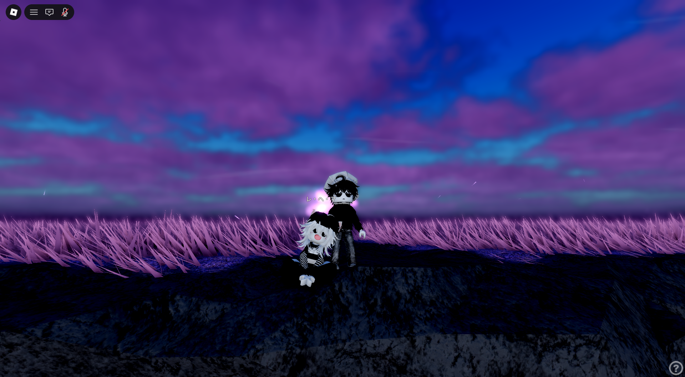

2021-2026
and still, my favorite chapter is you
My Valentine Letter for my Mahal ko Riri
I love you so much. You are the best person I have ever met, and I am truly grateful to have you in my life. From the moment you became part of my world, everything started to feel more meaningful and more complete. I hope we can be together forever, because loving you is something I never want to stop doing. I love you more than words can ever express, and I am so happy and proud to have you as my Valentine. Kahit pandemic tayo nagsimula, kahit marami tayong problema, maraming pagsubok, maraming away, at maraming gulo along the way… we still made it this far. And for me, that means so much. Sobrang blessing sa buhay ko na sa kabila ng lahat ng nangyari, lagi pa rin nating pinipili ang isa’t isa. Hindi naging madali ang journey natin, pero pinili nating manatili, umintindi, at magmahal at doon ako lalong napapahanga sa atin. We have shared so many memories together simple moments, happy times, even difficult days and I cherish all of them because kasama kita. We continue to grow, to learn, and to understand each other more. Even after all these years, I still find myself falling in love with you again and again. Hindi nauubos yung nararamdaman ko para sa’yo. If anything, it becomes deeper and stronger as time goes by. I want you to know that I am always committed to you. I will keep choosing you not just today, not just on Valentine’s Day, but every day. You are very important to me, and I truly appreciate everything about you your kindness, your strength, your imperfections, your real self. We accept each other for who we are, with all our flaws and imperfections, and that kind of love is something I will always treasure. Thank you for staying. Thank you for loving me. Thank you for being you. From mid 2021 until now… and for all the days still to come… I am grateful it’s you. As always, I love you so much from the bottom of my heart. Mahal na mahal kita, Riri. ❤️ Happy Valentine’s Day and Happy Anniversary to us.